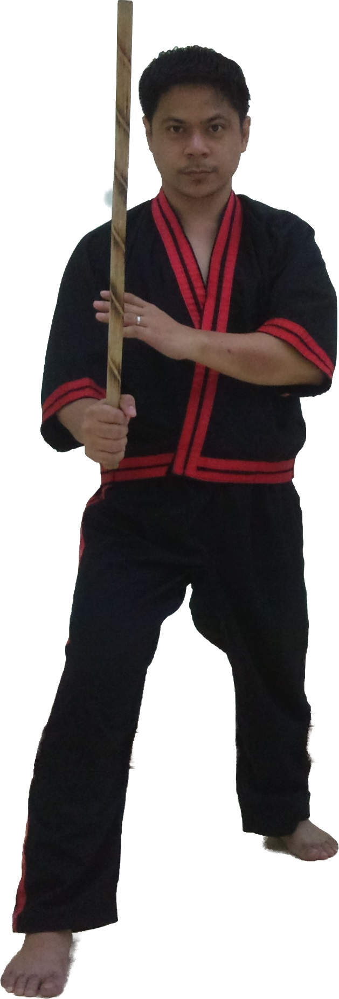
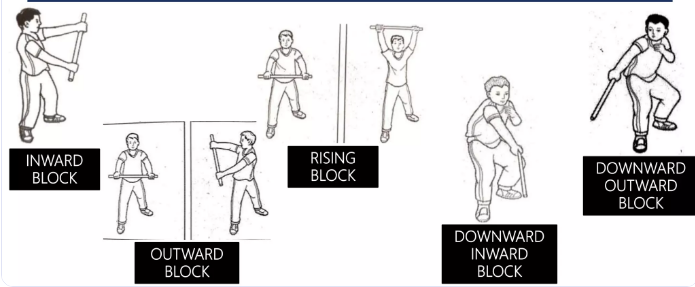
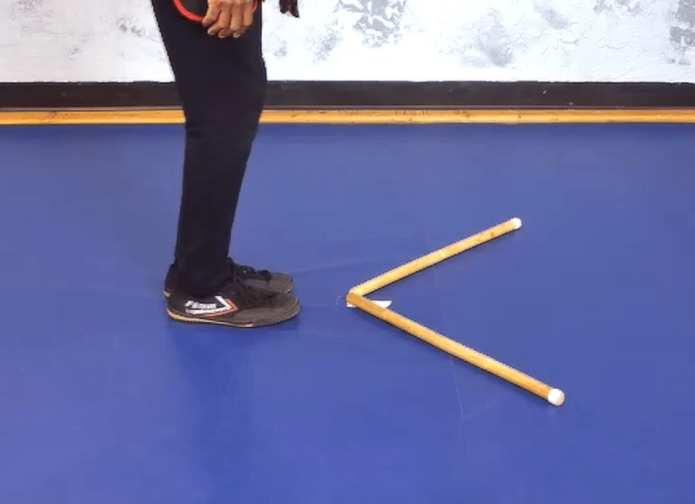

History of Arnis
Arnis, also known interchangeably as Kali or Eskrima, is the indigenous martial art of the Philippines. It is famous for its emphasis on weapon-based fighting with sticks, bladed weapons, and improvised items, seamlessly transitioning into empty-hand techniques.
- Pre-Colonial Origins: Developed by indigenous tribes for tribal combat and self-defense, the original systems relied heavily on the use of swords and local blades.
- Spanish Colonization: When Spanish colonizers banned the carrying of bladed weapons, Filipinos secretly preserved their fighting arts. The deadly movements were disguised and practiced within traditional dances and mock battles in religious stage plays (like the moro-moro).
- The Shift to Rattan: To practice safely and avoid the lethal consequences of training with live blades, practitioners transitioned to using the baston made of rattan, which remains the standard training tool today.
- Modern Era: Visionaries like Grandmaster Remy Presas founded "Modern Arnis" to unify the diverse regional styles and ensure the art's survival. In 2009, Arnis was officially declared the National Martial Art and Sport of the Philippines.
1. Basic Fighting Stance
The foundation of all movements in Arnis. A proper stance ensures balance, mobility, and readiness to strike or defend.
- Feet are shoulder-width apart.
- Lead foot points forward; rear foot is angled slightly outward.
- Knees are slightly bent to absorb impact and allow quick movement.
- Weapon hand is raised and ready, off-hand (live hand) is positioned near the chest for checking.

2. Basic Grip
Holding the baston (stick) correctly prevents you from dropping it and provides leverage for strikes.
- Wrap your fingers firmly around the stick.
- Leave a fist-width of space (about 2-3 inches) at the bottom. This bottom part is called the punyo and is used for close-quarters striking and hooking.
- Keep the wrist relaxed to allow snapping motions.

3. Basic Blocking Techniques
Defending against an opponent's strikes using the stick and the live hand.
- Inside Block: Defending against strikes to the left side of your body (Strike #1). Force is met with force, supported by the live hand.
- Outside Block: Defending against strikes to the right side of your body (Strike #2).
- Roof Block: Defending against overhead strikes (Strike #12), angling the stick upward to slide the attack off.
- Drop Block: Defending against low strikes to the knees or legs.

4. Basic Footwork
Footwork is how you control the distance (range) and angles between you and your opponent.
- Forward Triangle (V-Step): Stepping diagonally forward to the left or right to evade and counter.
- Reverse Triangle: Stepping diagonally backward to retreat while maintaining a defensive posture.
- Lateral Stepping: Moving side-to-side to flank the opponent.

5. The 12 Striking Techniques
The core striking targets in Modern Arnis. Click a strike below to learn how to execute it.